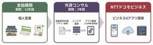

NTT docomo Business Engineers' Blog
https://engineers.ntt.com/
NTTドコモビジネス（旧NTT Com）のエンジニアによるブログです。
フィード

金融営業から内製開発エンジニアへ ― 小さな行動で築いたキャリアの自律 2
2
NTT docomo Business Engineers' Blog
はじめに ビジネスdアプリ開発チームの徳原です。 私は地元の金融機関で12年間営業職として勤務した後、IT業界へキャリア転換しました。 本記事では、これまで私が転職で経験したことやキャリアの自律に向けた取り組みについて紹介します。 目次 はじめに これまでのキャリア 金融機関からIT業界へ 前職(外資コンサル)でのSE業務 キャリアを動かしたきっかけ 継続的な学習 前職のインフラ運用業務で苦戦したこと 前職のアプリ開発で苦戦したこと 現職へ転職することになったきっかけ 現職の業務とキャリアの広がり 学習の支援 外部発表の機会 現職のアプリ開発について これまでの経験から感じたキャリアの自律 お…
2日前
「自分でやり切る」だけでチームは強くならない 28
NTT docomo Business Engineers' Blog
NTTドコモビジネス イノベーションセンター テクノロジー部門 MetemcyberPJでの経験を通じ、私は「自分でやり切ること」と「チームとして成果を出すこと」のバランスの重要性を学びました。若手社員でも幅広い業務に挑戦できる環境の中で、責任感を持ちながらも周囲と協力することで、個人の成長とチーム成果の両立が可能であると実感しています。この記事では、その経験から得た学びと実践のポイントを紹介します。 はじめに 若手でも幅広く挑戦できる環境 スクラムという前提 私が経験した「抱え込み」 タスクの優先順位のつけ方 最後に はじめに こんにちは。イノベーションセンター テクノロジー部門 Metem…
4日前

最新のPyTorchで軽量OCRモデルPARSeqをTensorRT化する
NTT docomo Business Engineers' Blog
こんにちは。イノベーションセンターの加藤です。普段はコンピュータビジョンの技術開発やAIシステムの検証に取り組んでいます。今回は最新版のPyTorchを使って軽量なTransformerベースOCRモデルであるPARSeq(Permuted Autoregressive Sequence)をTensorRTモデルに変換して高速化した取り組みについて紹介します。
12日前
OpenROADMに準拠した光伝送網の概要・構築編― APNテストベッドで探る技術と運用手法(その2)
NTT docomo Business Engineers' Blog
イノベーションセンターIOWN推進室の鈴木と千葉です。普段は全社検証網の技術検証、構築、運用を担当しています。 前回オープントランスポンダーの世界 ― APNテストベッドで探る技術と運用手法（その1）にて、クライアント信号を光波長信号に変換する「オープントランスポンダー」を取り上げました。 今回はその続編として光ネットワークにおいて波長信号の多重化・分波、スイッチング、および光信号の増幅・パワー調整を一手に担うROADM（Reconfigurable Optical Add/Drop Multiplexer）の物理構築について実務的な設計ポイントや構築の勘所を紹介します。 OpenROADMア…
18日前
セキュリティカンファレンス「NCA Annual Conference 2025」に登壇してきました
NTT docomo Business Engineers' Blog
こんにちは、イノベーションセンターのNetwork Analytics for Security（NA4Sec）プロジェクトの山門です。 この記事では、2025年12月18日-19日に開催されたカンファレンスNCA Annual Conference 2025へ登壇してきた模様を紹介します。 組織におけるドメイン名の「終活（廃棄）」に伴うリスクをテーマに、利用終了ドメイン名に対する2.3億件のログ分析結果を説明しました。ECS（EDNS-Client-Subnet）を用いた分析により、「利用終了後も攻撃・スキャンが絶えない」という実態や、観測行為自体が攻撃を誘発する「観察者効果」といった興味深…
19日前
セキュリティカンファレンス「JSAC2026」に登壇してきた話
NTT docomo Business Engineers' Blog
みなさんこんにちは、イノベーションセンターの益本(@masaomi346)です。 Network Analytics for Security (以下、NA4Sec) プロジェクトのメンバーとして活動しています。 この記事では、2026年1月22日・23日に開催されたセキュリティカンファレンスJSAC2026で登壇したことについて紹介します。 ぜひ最後まで読んでみてください。 JSACについて JSAC (Joint Security Analyst Conference) はJPCERT/CCが主催するセキュリティカンファレンスで、現場のセキュリティアナリストが集い、高度化するサイバー攻撃に…
2ヶ月前
ビジネスdアプリの社内報PCブラウザ版リリース：レスポンシブ対応とGTM導入で実現した開発効率化
NTT docomo Business Engineers' Blog
はじめに こんにちは、ビジネスdアプリ開発チームの露口・德原です。 これまでモバイル端末向けに展開してきた「ビジネスdアプリ」の社内報機能に、PCブラウザ版が加わりました。本記事では、その社内報PCブラウザ版の開発についてご紹介します。 ビジネスdアプリについては過去の記事をご覧ください。 ・サーバレスをフル活用したビジネスｄアプリのアーキテクチャ（前編） ・サーバレスをフル活用したビジネスｄアプリのアーキテクチャ（後編） 目次 はじめに 目次 社内報機能の概要 主な機能の紹介 リソースを最小限に抑える2つの工夫 フロントエンド：CSS（@media）によるレスポンシブ対応への一本化 バックエ…
2ヶ月前
えっ、ソース名とパッケージ名って違うんですか？ ― 脅威インテリジェンスインターンで挑んだSBOM調査バトル
NTT docomo Business Engineers' Blog
はじめに こんにちは、NTTドコモグループの現場受け入れ型インターンシップ2025に参加した博士1年の樋口です。 私が参加したポストは、【D3】脅威インテリジェンスを生成・活用するセキュリティエンジニア/アナリストです。前半は Network Analytics for Security PJ（以下、NA4Sec）、後半は Metemcyber PJ（以下、Metemcyber）に参加し、幅広い内容を学ぶことができました。 本体験記が、来年以降に参加を検討されている方の一助となりましたら幸いです。 はじめに インターンシップの説明 参加した経緯 概要 SBOM SBOMとは何か フォーマットご…
3ヶ月前
データ分析開発合宿を3年続けて分かった運営のコツと課題
NTT docomo Business Engineers' Blog
この記事は、NTT docomo Business Advent Calendar 2025 14日目の記事です。 こんにちは、社内データ分析コミュニティ「データサイエンスちゃんねる」の是松です。 普段はジェネレーティブAIタスクフォースに所属しており、特定の業務に特化したAIエージェントの開発などを行っています。 データサイエンスちゃんねるでは、社内向けの輪読会やKaggle LT会など、社内のデータサイエンスに興味があるメンバーの交流を目的とした活動を行っています。 本記事では、データサイエンスちゃんねるの目玉活動になりつつある「データ分析開発合宿」について、運営目線での話をしたいと思いま…
3ヶ月前
利用終了ドメイン名を狙うなりすましメール―DMARC Report分析から見えた実態と対策
NTT docomo Business Engineers' Blog
この記事は、NTT docomo Business Advent Calendar 2025 25日目の記事です。 みなさんこんにちは、イノベーションセンターの冨樫です。Network Analytics for Security1 (以下、NA4Sec)プロジェクトのメンバーとして活動しています。 NTTドコモビジネスでは、ドロップキャッチ等のリスクに対応するため、すでに使い道がなくなったドメイン名(以下、利用終了ドメイン名)であっても、永年保有するポリシーを採用しています。 ただ、利用終了ドメイン名を保持し続けることで、金銭面・管理面のコストがかかり続けます。 また、不必要にドメイン名を保…
3ヶ月前
私のAIって安全？AIセーフティ評価ツールを試してみた。
NTT docomo Business Engineers' Blog
この記事はNTT docomo Business Advent Calendar 2025 24日目の記事です。 様々な場面でのLLM（Large Language Model）の利活用が進む中で安全性の確保は、セキュリティなどの信頼性が求められる分野では重要な課題です。 そこで本記事では「AIセーフティに関する評価観点ガイド」とそれに基づいた安全性評価を行えるツールである「AIセーフティ評価環境」の使い方について紹介します。 はじめに AIセーフティ評価観点ガイドの概要 AIセーフティ評価環境の概要 評価の概要 定量評価 定性評価 実際に使ってみた 評価の設定と実行 環境構築 評価内容の定義…
3ヶ月前
【GRFICSv3】新しく公開された化学プラントシミュレータを動かして、IDSで攻撃を検知してみた
NTT docomo Business Engineers' Blog
2025年10月に公開された「GRFICSv3」の環境構築手順と、制御ネットワーク向けIDS「OsecT」を組み合わせた検証記事です。 専用のダミーIFを用いたパケット可視化の手法や、Pythonスクリプトによる攻撃の実行、およびIDSでの検知アラート発生の様子を紹介します。 GRFICSv3とは GRFICSv3の実行 GRFICSv3の画面紹介 シミュレータ画面 エンジニアリングワークステーション画面 攻撃者端末の画面 Caldera画面 PLC (OpenPLC) 画面 HMI (Scada-LTS) 画面 ルータ/ファイアウォール画面 GRFICSv3の所感 OT IDS OsecTに…
3ヶ月前
Webhookの「作り方」 〜セキュアでスケールするWebhook機能の開発〜
NTT docomo Business Engineers' Blog
この記事は、 NTT docomo Business Advent Calendar 2025 22日目の記事です。 SkyWayでは、2025年11月19日にWebhook機能のβ版をリリースしました。 この記事では、サービスにWebhook機能を実装する際に考慮すべき観点やアーキテクチャーについて紹介します。 はじめに Webhook機能を実装する際の観点 1. セキュリティ DoS攻撃の送信元になるリスク SSRF(Server Side Request Forgery)のリスク ユーザーのサーバーに対してSkyWayのWebhookを装ったリクエストが送信されるリスク 2. 信頼性とリ…
3ヶ月前
4年間の実践から考える「異なる領域や立場を接続するデザイン」
NTT docomo Business Engineers' Blog
この記事は、 NTT docomo Business Advent Calendar 2025 21日目の記事です。 こんにちは。イノベーションセンター IOWN推進室の塚越です。 12/21を担当するのも今年で3年目になりました。 最近、自分自身がキャリアの一つの分岐点に立っている、という実感を持つようになりました。 役割や関わり方が少しずつ変わる中で、 「これまで自分が何に向き合い、何を大切にしてきたのかを、一度言葉にして整理したい」 「これまで実践してきたことや考え方に、どこかで共鳴してくれる人が現れたらいいな」 と思うようになり、この記事を書くことにしました。 この記事では、私自身の経…
3ヶ月前
Vibe Codingハッカソン優勝の裏話
NTT docomo Business Engineers' Blog
この記事は、 NTT docomo Business Advent Calendar 2025 20日目の記事です。 先日2025年9月に開催されたGoogle Cloud主催のVibe Codingハッカソンに参加し、優勝することが出来ました。Gemini CLIを活用した「手書きコーディング禁止」のルールのもと、約2時間で開発したツールの内容と裏話、Vibe Codingが可能にした新しいアプローチについても考察していきます。 Google Cloud +AI Prism と「手書き禁止」のハッカソン Google Cloud +AI Prismとは？ Vibe Codingハッカソン 参…
3ヶ月前
Tenstorrentにおけるfused kernel実装と性能評価
NTT docomo Business Engineers' Blog
この記事は、NTT docomo Business Advent Calendar 2025 19日目の記事です。 こんにちは、イノベーションセンターの鈴ヶ嶺です。普段はAIアクセラレータの検証に関する業務に従事しています。 本記事では、まずTenstorrentのAIアクセラレータアーキテクチャを紹介し、その特徴について説明します。次に、複数の演算を1つのkernelに統合するfused kernelによる最適化に注目し、標準正規乱数(randn)を例にTenstorrentのアクセラレータにおける具体的な実装方法と性能評価を共有します。その結果、従来の演算の組み合わせの標準正規乱数の実装と…
3ヶ月前
動かして理解する。AI駆動型マルウェアとは ― デモ用PoCによる挙動検証 ―
NTT docomo Business Engineers' Blog
この記事は、NTT docomo Business Advent Calendar 2025 18日目の記事です。 みなさんこんにちは、イノベーションセンターの田口です。 普段はOffensive Securityプロジェクトのメンバーとして攻撃技術の調査・検証に取り組んでいます。 私たちのチームでは定期的に技術LTと称して、各メンバーが自由に技術的知見を共有する時間を設けています。 この記事では、私が技術LTの場で発表したAI駆動型マルウェア1の動作デモと、発表後のチーム内議論の様子について紹介します。 この記事では、AI駆動型マルウェアの概念を理解するために、実害のないデモ用PoCを作成し…
3ヶ月前
Google Cloud資格全冠達成のリアル！学習のコツと苦労点【社内座談会レポート】
NTT docomo Business Engineers' Blog
この記事は、NTT docomo Business Advent Calendar 2025 17日目の記事です。 はじめに 本記事は、コミュニケーション＆アプリケーションサービス部でビジネスdアプリの開発を担当している 立木・富田・西谷 の共同執筆です。 私たちは、ビジネスdアプリという、ビジネスパーソンの仕事や生活に役立つポータルアプリを開発しています。 ビジネスdアプリチームでは、モバイルアプリ・フロントエンド・バックエンドなどの開発とデザインの一部を社員で内製しており、以下の記事で以前記載したようにGoogle Cloudのサーバーレスサービスをフル活用しています。 サーバレスをフル活…
3ヶ月前
ハッカソンでIoT腹巻きを作ったら、競馬の冠レースを開催していた話
NTT docomo Business Engineers' Blog
この記事は、 NTT docomo Business Advent Calendar 2025 の16日目の記事です。 社内サークルのメンバーでハッカソンに参加した結果、気が付いたら競馬の冠レースを開催していたという活動報告です。 はじめに AIロボット部の紹介 参加したハッカソンの概要 アイデアの背景とコンセプト 「でっかい」縛り 100均アイテム縛り 「スマホのみ」縛り 「お腹」に関連した機能 制約と創造性 結果はオーディエンス賞！そして風変わりな賞品を頂く 船橋競馬場にて「みかかロボット杯」開催！ おわりに はじめに こんにちは、AIロボット部のサークルメンバーの宮岸(@daiking1…
3ヶ月前
じぶんが管理職になれるわけないじゃん、ムリムリ! (※ムリでもやるんだ!!)
NTT docomo Business Engineers' Blog
この記事は、 NTT docomo Business Advent Calendar 2025 の15日目の記事です。 皆さまどうもこんにちは、@strinsert1Na という人です。以前は株式会社エヌ・エフ・ラボラトリーズという会社に出向しながらバリバリ「脅威インテリジェンス」のお仕事をしておりまして、今年の7月からはNTTドコモビジネス 情報セキュリティ部の管理職として新たなキャリアを歩んでおります。 ここまで書くと「なんだ、ただの順調にキャリア形成している人のめでたい話か」と思われてしまいそうですが、そんなことはありません。正直なところ、ほぼ毎日「(あんなやり方でよかったんだろうか…)…
3ヶ月前
LLMに易しいOpenStack MCPサーバーの作り方
NTT docomo Business Engineers' Blog
この記事は、 NTT docomo Business Advent Calendar 2025 13日目の記事です。 OpenStackのAPIをModel Context Protocol(MCP)を使って操作できるようにし、Large Language Model(LLM)経由でクラウドのリソースを操作できるようにしました。 しかし、MCPサーバーを介してAPIをそのまま叩けるようにするだけではLLMにとって扱いづらく、コンテキストが無駄に大きくなる・ツールをうまく実行できない、といった問題がありました。 こういった問題に対して、コンテキストを取捨選択して削減しつつ、必要な機能に絞ったMC…
3ヶ月前
ソフトウェアの成分表示？SBOM管理の課題とSSVC・AIを用いたベストプラクティス
NTT docomo Business Engineers' Blog
SBOM（Software Bill of Materials）とは、ソフトウェアに含まれるコンポーネントの一覧表であり、近年の法統制によりその管理が求められています。本記事では、SBOM管理の必要性と現状の認知度についてお話しします。また、SSVCによる脆弱性評価とAIを活用した、効率的なSBOM管理のベストプラクティスについて解説いたします。 はじめに SBOM（Software Bill of Materials）とは SBOMの認知度 SBOM法統制とガイドライン SBOM管理の法統制が進む背景 OSS（オープンソースソフトウェア）の急速な普及 発見される脆弱性の爆発的な増加 現状考え…
3ヶ月前
実践！ Azure Databricks のバックエンド・データ通信を閉域化する【Bicep (+α)】
NTT docomo Business Engineers' Blog
この記事は、NTT docomo Business Advent Calendar 2025 10日目の記事です。 Microsoft の IaC 言語である Bicep (+ Azure CLI/Databricks CLI) を使って、Azure Databricks ワークスペースをデプロイし、そのバックエンド通信や Azure データサービスへの通信を閉域化する方法を紹介します。 また、その環境を使ったデータ収集の一例として、Azure Event Hubs を使ったプライベートなデータストリーミングを試します。 はじめに なぜこの構成を記事にするのか 今回の構成と前提 前提 Bice…
3ヶ月前
Unitree Go2をteleopしてみた
NTT docomo Business Engineers' Blog
この記事はNTT docomo Business Advent Calendar 2025 9日目の記事です。 Unitree Go2はROSの通信ミドルウェアとしてEclipse Cyclone DDSを利用していますが、DDSはNATを越えられないという課題があります。 この課題に対し、DDSをZenohにブリッジしてNAT越えを実現する事例がコミュニティでいくつか紹介されています（11, 22, 33）。 本記事ではこのアプローチをUnitree Go2に適用し、zenoh-plugin-ros2ddsを用いて Unitree Go2が扱うDDSメッセージをインターネット越しに送受信する…
3ヶ月前
xUTPによるテストダブルの定義とその図解
NTT docomo Business Engineers' Blog
この記事は、NTT docomo Business Advent Calendar 2025 8日目の記事です。 自動テストの文脈で、モックやスタブという用語を目にすることがあるかと思います。この用語は、人やテストフレームワークごとに異なった意味で使われることがあり、しばしば混乱を招いています。そして、そのような指摘をした上で概念の整理を図ったものとしてGerard Meszarosの書籍『xUnit Test Patterns』（xUTP）1とウェブサイト2があります。 xUTPでは、テスト対象（SUT）の依存コンポーネント（DOC）を置き換えるものを総称して「テストダブル」と呼び、その目的…
3ヶ月前
テンソル次元の整合性を静的検査するmypyプラグインを実装しようとした話
NTT docomo Business Engineers' Blog
この記事は、NTT docomo Business Advent Calendar 2025 7日目の記事です。 こんにちは。イノベーションセンターの加藤です。普段はコンピュータビジョンの技術開発やAI/機械学習（ML）システムの検証に取り組んでいます。 ディープラーニングの実装をしているときに、変数のshapeを管理するのはなかなか大変です。いつのまにか次元が増えていたり、想定外のshapeがやってきたりして実行時に落ちてしまった！というのは日常茶飯事だと思います。 こういった問題に対して静的解析で何とかできないかと試行錯誤した結果を共有します。 mypyプラグインを使うモチベーション my…
3ヶ月前
エンジニアがエンジニアに力を与えるプロジェクトの紹介
NTT docomo Business Engineers' Blog
この記事は NTT docomo Business Advent Calendar 2025 3 日目の記事です。 みなさんこんにちは、イノベーションセンターの @Mahito です。 普段は社内のエンジニアが働きやすくなることを目標に、コーポレートエンジニアのような活動やエンジニア向けイベントの企画・運営をしています。 今回は、上でも述べているように、 社内のエンジニアが働きやすくすることを目標に活動をしているイノベーションセンターの取り組み Engineer Empowerment プロジェクトについて紹介します。 NTTドコモビジネスの中で、エンジニアが働きやすくなるためにどのような活動…
4ヶ月前
持ち運べる OpenStack 環境をつくる
NTT docomo Business Engineers' Blog
この記事は、NTT docomo Business Advent Calendar 2025 2 日目の記事です。 Android 15 から Android 端末上で Linux 環境を動かすことが可能になりました。せっかくなので、 OpenStack をインストールして VM を動かしてみました。 はじめに スマホの Linux 開発環境に SSH する 開発環境を探検する OpenStack のインストール方法について DevStack を実行して minimal な OpenStack 環境をつくる スマホ OpenStack に VM を建ててみる トラブルシューティング Linux…
4ヶ月前
13年目の1年生――あれほど避けていたマネージャーになるまで
NTT docomo Business Engineers' Blog
この記事は、NTT docomo Business Advent Calendar 2025 1日目の記事です。 こんにちは、デジタル改革推進部の小林です。NTT docomo Business Engineers' Blogと改題してからは初の、アドベントカレンダーが始まりました。その1日目の記事です。 私は4月から現職のデジタル改革推進部に所属し、社内認証サービスのプロダクトオーナーをやっています。このサービスにより、NTTドコモビジネスの社員はPCや各種社内システムをひとつのIDでシームレスに利用できます。現在は私のほかメンバー4人と協力会社の体制で運営しています。 私は新卒で入社して以…
4ヶ月前
業務で進むLLM活用、その裏に潜む脅威とは？Microsoft 365 Copilotを介した攻撃検証（インターン体験記）
NTT docomo Business Engineers' Blog
こんにちは、NTTドコモグループの現場受け入れ型インターンシップに「D2：攻撃者視点に立ち攻撃技術を研究開発するセキュリティエンジニア」ポストで参加させていただきました、太田です。 本記事では、本インターンシップでの取り組みについて紹介いたします。 NTTドコモグループのセキュリティ業務、特にOffensive Securityプロジェクト（以下、PJ）に興味のある方、インターンシップの参加を検討している方などへの参考になれば幸いです。 OffensiveSecurityPJとは 参加経緯 インターンシップ概要 Microsoft 365 Copilotの悪用 Microsoft 365 Co…
4ヶ月前